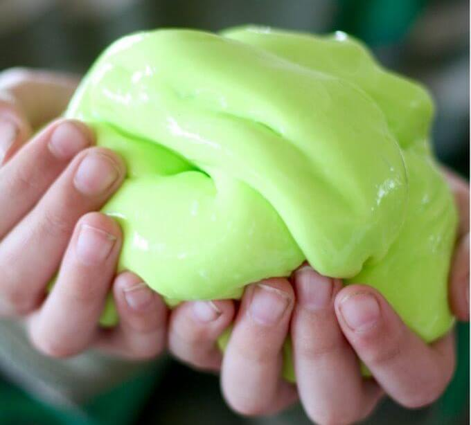

Flubber Slime
Flubber is a non-sticky, rubbery sort of slime. This nontoxic slime is made from fiber and water.This recipe makes the non-sticky sort of 'rubber' or gelatinous slime that is known as flubber. The difficulty is average, but only takes about 15 minutes!
Ingredients

- 1 teaspoon Metamucil or similar soluble fiber
- 8 ounces water
- microwave-safe bowl
- microwave oven
- food coloring (optional)
Flubber Slime?
This type of slime does not require glue and a slime activator like the usual way of making slime. This is great for being creative of making slime!
Procedure
- Mix 1 teaspoon of Metamucil with 1 cup (8 ounces) of water in a microwaveable bowl. You can add a drop or two of food coloring if you wish. Alternatively, you could add a little powdered drink mix or flavored gelatin to get color/flavor.
- Place bowl in the microwave and nuke on high for 4-5 minutes (actual time depends on microwave power) or until the goo is about to bubble out of the bowl. Turn off the microwave.
- Let the mixture cool slightly, then repeat step 3 (microwave until about to overflow). The more times this step is repeated the more rubbery the substance will become. The purpose of the cooling step is to check the consistency of the slime and prevent it from overflowing the container.
- After 5-6 microwave runs, (carefully - hot hot HOT) pour the flubber onto a plate or cookie sheet. A spoon can be used to spread it out.
- Flubber can be stored at room temperature in a sealed baggie for several months. It will last indefinitely in a sealed bag in the refrigerator.
- Allow to cool. There you have it! Non-stick flubber. A knife or cookie cutters may be used to cut the flubber into interesting shapes. The shapes will slowly "melt" as the slime flows.
ENJOY!

If the flubber is sticky then the amount of water needs to be reduced. It should be clammy, but not sticky. Use less water next time. Please use adult supervision. Molten fluids and microwaves are involved!
Flubber Slime